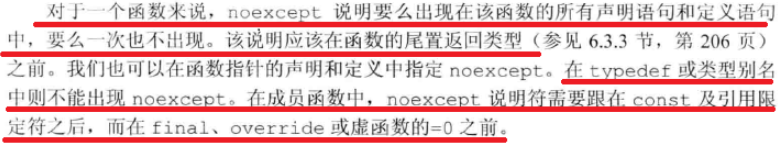

不同数据类型内存大小
https://wiki.wireshark.org/Development/Win64
| 喵喵 | 32位 | UNIX64位 | Windows64位 |
|---|---|---|---|
| char | 1 | 1 | 1 |
| short | 2 | 2 | 2 |
| int | 4 | 4 | 4 |
| long | 4 | 8 | 4 |
| long long | 8 | 8 | 8 |
| (pointer) | 4 | 8 | 8 |
| float | 4 | 4 | 4 |
| double | 8 | 8 | 8 |
char[]作为形参
编译器把它作为char *处理。
指针的引用
int *& p;
const关键字
常量指针（Constant Pointer）：const int p/int const p
指针常量（Pointer to Constant）：int *const p
常量引用（Constant Reference）：const int& p/int const& p
等号操作符
返回左边的值。
decltype关键字
https://www.cnblogs.com/QG-whz/p/4952980.html
decltype与auto关键字一样，用于进行编译时类型推导。
int i = 4;
decltype(i) a;
template <typename _Tx, typename _Ty>
auto multiply(_Tx x, _Ty y)->decltype(_Tx*_Ty)
{
return x*y;
}
inline关键字
https://www.cnblogs.com/fnlingnzb-learner/p/6423917.html
内联函数。声明内联对编译器只是一个建议而已。inline必须放在函数定义而不是声明那里。
noexcept关键字
noexcept修饰符
C++11起，以下声明抛出哪些异常的方案被废弃了：
void foo() throw(异常1,异常2)
{
//...
}
如果要表示函数不会抛出异常有以下几种表达方式：
//函数如果抛出异常就会自动调用std::terminate
void foo() noexcept
{
//...
}
void foo2() noexcept(true)
{
//...
}
void foo3() throw()
{
//...
}
改用noexcept可以避免异常扩散。

noexcept运算符
（待补充）
类型强制转换
https://www.cnblogs.com/goodhacker/archive/2011/07/20/2111996.html
const_cast
去const指针或者const引用的const属性，要求它们指向的对象没有const属性。
#include<iostream>
using namespace std;
int main(int argc, char const *argv[])
{
const int a = 12;
const int *p = &a;
int *tmp = const_cast<int *>(p);
*tmp = 11;
cout << a;
}
reinterpret_cast
不同类型的指针类型转换，只会做原样复制
static_cast和dynamic_cast
https://blog.csdn.net/qq_26849233/article/details/62218385
对于上行转换（子类到父类），dynamic_cast和static_cast是一样的。
对于下行转换，static_cast是编译时转换，dynamic_cast是运行时转换。
Base *P = new Base;
//能够返回指针，所以有越界风险
Derived *pd3 = static_cast<Derived *>(P);
//返回nullptr
Derived *pd4 = dynamic_cast<Derived *>(P);
众所周知，对于有虚函数的类或者虚拟机制的类
C语言风格转化（不推荐）
相当于const_cast、static_cast、reinterpret_cast挨个试一遍，哪个能用就用哪个。
foreach（C++11）
for(int& value:vec) {
cout<<value<<endl;
}
RAII
https://zh.wikipedia.org/wiki/RAII
Resource Acquisition[ˌækwɪ'zɪʃn] Is Initialization。
RAII要求，资源的有效期与持有资源的对象的生命期严格绑定，即由对象的构造函数完成资源的分配(获取)，同时由析构函数完成资源的释放。在这种要求下，只要对象能正确地析构，就不会出现资源泄露问题。
RTTI
Run-Time Type Identification，Run-Time Type Information（运行期类型信息）。
内存对齐
http://www.cppblog.com/snailcong/archive/2009/03/16/76705.html
如果一个变量的内存地址正好位于它长度的整数倍，他就被称做自然对齐。
随机访问内存地址对CPU来说是非常慢的，为了一次能取到变量的值，需要变量在内存中对齐。
基本类型的数据对齐值是其本身的大小，例如char为1字节，int为8字节（64位系统）。数组对齐值为其成员类型的对齐值。
内存对齐的规则（结构体和联合体的对齐值计算）：
#pragma pack(P)可以取的值为1、2、4、8、16、……，默认值为4或者8，表示CPU访问内存时以nP的地址为起点，一次拿走P字节的内存的内容。（n为自然数）
结构体要执行一下两步，联合体只要执行2就好了：
-
对于结构体的各个成员，第一个成员位于偏移为0的位置，以后每个数据成员的偏移量必须是 min(P，这个数据成员的对齐值)*n 。也就是说，如果成员对齐值比P大，，它的起始地址必须为nP。
-
在数据成员完成各自对齐之后，结构体(或联合体)的对齐值为 min(P,结构体/联合体数据成员的最大对齐值)*n 。